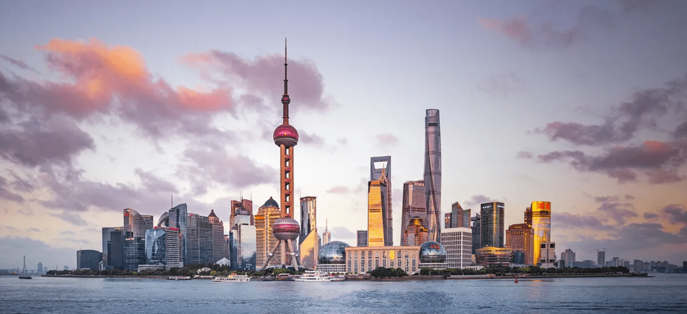
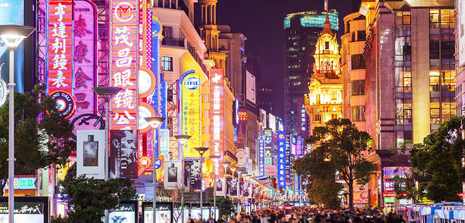

Overview
China, the world's most populous country, is a vast and culturally rich nation in East Asia. With a history spanning thousands of years, China has been a major player in global civilization, contributing to art, philosophy, science, and technology. The capital, Beijing, is home to iconic landmarks such as the Forbidden City and the Great Wall. Shanghai, a global financial hub, represents the country's modernity with its futuristic skyline. China's diverse landscapes range from the towering peaks of the Himalayas to the expansive Gobi Desert. As an economic powerhouse, China has experienced rapid industrialization and urbanization, becoming a key player in international trade and technology. The country's cultural heritage, encompassing traditions like Confucianism and Daoism, coexists with a dynamic contemporary society, making China a fascinating blend of ancient history and modern innovation
Quick Facts
💬 Language: Mandarin,Cantonese, Shanghainese
💴 Currency: Chinese Yuan (CNY)
🕌 Religion: Buddhism
🏢 Capital: Beijing
🌍 Climate: Various; subartic in the north to tropical in the south.
Budget
When planning a trip to China, it's important to consider the vastness of the country and the regional variations in cost. Major cities like Beijing, Shanghai, and Guangzhou tend to have higher living expenses compared to smaller cities and rural areas. Accommodation costs may vary significantly depending on the chosen city and the type of lodging, ranging from hostels and budget hotels to luxury establishments. Transportation costs can also fluctuate; while local buses and trains are generally affordable, long-distance travel or domestic flights might impact the overall budget. Exploring cultural and historical sites, such as the Great Wall or the Terracotta Army, may involve entrance fees. Additionally, indulging in local experiences like traditional tea ceremonies or iconic culinary delights can add to the overall expenditure. Considering these factors, a well-planned budget for a trip to China allows travelers to embrace the country's diverse offerings while managing expenses according to their preferences and travel style.
Interesting Places in China
Beijing
- Domain for the emperor and his court for nearly 500 years.
Forbidden City
- The Great Wall of China exists as one of the greatest spectacles in the world, with a history of over 2,300 years. The longest wall in the world was constructed over generations by the emperors of China to protect their territory. The vision was to safeguard the land from northern nomadic intruders.
Great Wall of China
Shanghai
- 
- The 351-meter-high Space Capsule demonstrates the scientific charm of space scenery and China’s space exploration program by technological means. It is also the highest sightseeing floor of the Oriental Pearl Tower. On a clear day, you can look out over the Sheshan Mountain and Chongming Island
Oriental Pearl Tower
- 
- Next to the Bund, Nanjing Road is the busiest street in Shanghai, the first modern commercial street in China.
Nanjing Road
Xi'an
- The Terracotta Army in Xi'an is considered one of the most significant archaeological sites in the world. More than 6,000 life-size terracotta warriors and horses have been unearthed, all with different expressions and poses. Many remain interred.